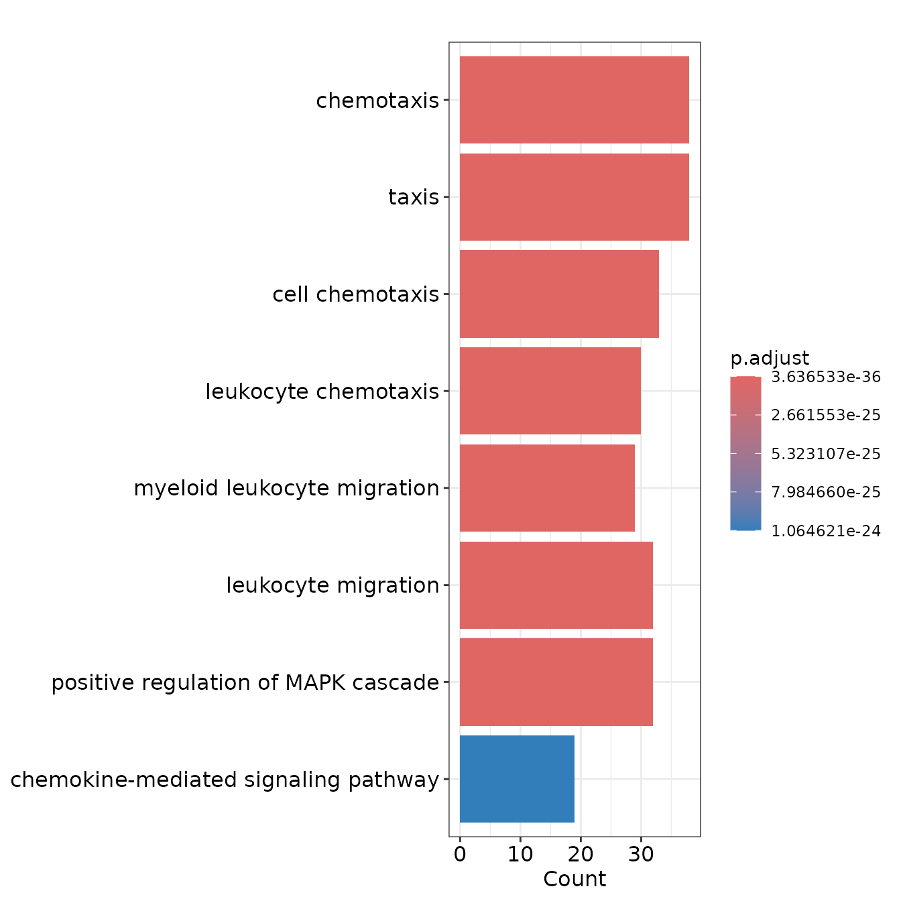

Pathway Enrichment Analysis
Enrichment.RmdLinkage can help you visualize tabular and graphical pathway
enrichment results of interested gene lists.
The GOEnrichment() and
KEGGEnrichment() functions allow you to input a list of
interested genes and set four key parameters (i.e., adjusted pvalue
cutoff, qvalue cutoff, minimal size of annotated genes for testing, and
maximal size of annotated genes for testing) for GO or KEGG pathway
enrichment analysis.
library(LinkageR)
data("SASPGeneSet")
go <-
GOEnrichment(gene_list = SASPGeneSet,
Species = "Homo",
genelist_idtype = "external_gene_name")
KEGG <-
KEGGEnrichment(
gene_list = SASPGeneSet,
Species = "Homo",
genelist_idtype = "external_gene_name"
)Linkage offers several types of visual charts to interpret the functional results from multiple perspectives.
EnrichDotPlot(go)
EnrichBarPlot(go)
EnrichUpsetPlot(go)
EnrichCnetPlot(go)
EnrichWordCloud(go, Type = "GO")